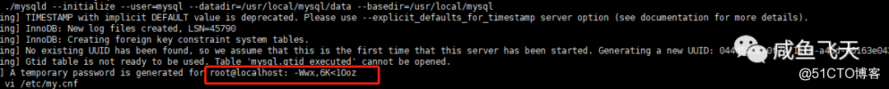
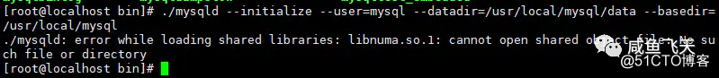
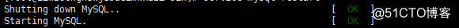

一 、安装前须知
二 、安装前的必要检查和准备(不要遗漏任何一步骤)
2.1、检查系统是否已经安装过mysql
例如下图所展示，就存在两个记录
2.2 、执行删除命令，一 一 删除
2.3 、删除之后，再检查一次
2.4、查询所有mysql对应的文件夹
2.5、删除相关文件
2.6 、验证是否删除完毕（有的话，继续删除）
2.7、检查mysql用户组和用户是否存在，如果没有，则进行创建
三、下载安装包（网络不好的可直接去官网对应的版本进行下载）**
四、安装mysql
4.1、找到你的安装包，进行解压
4.2、解压后会多出一个解压文件
4,3、移动该文件至/user/local/下并将文件名改为mysql
注意点:如果目录下存在mysql的文件名，请改为其他的名称，否则后续无法继续进行操作
4.4、在/user/local/mysql目录下创建data文件夹，用于存放数据库
4.5 、更改mysql目录下所属的用户组、用户和权限
4.6、编译并安装mysql
注意点：红色圈出的部分是临时密码，需提前保存，用来登录mysql，修改密码

注意点：此处可能发生的错误，有些依赖没安装

执行命令（命令都执行完毕之后，还有问题，请百度。）
执行命令完毕，在重新进行编译安装，执行(6)此处命令
4.7 、编辑配置文件my.cnf
注意点：清空里头的内容，直接复制下图的代码。后续有需要可自行补充
4.8、测试启动mysql服务器
当你看到OK标识时，标识已经启动成功了，恭喜你

注意点：当你看到这个时，意味着有可能此方法不适用你，对不起，继续百度去吧
可能能解决的办法：
查看mysql进行并且kill掉它（如果没有可Kill的进程，百度去吧，此方法不适用）
4.9、设置软连接，重启mysql服务
至此，安装完毕。